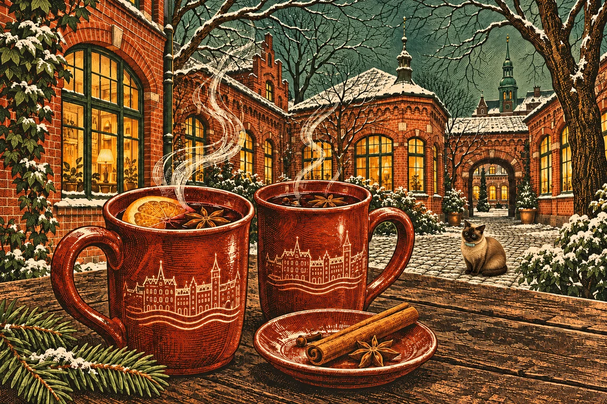

APraxisrunde
Was hat im Alltag funktioniert? In der Runde zeigen Nachbar:innen ihre eigenen Versuche mit KI. Bring eine Frage mit, etwa wie aus deinen Notizen ein brauchbares Protokoll wird.
Hamburg · Barmbek
Wir sind die KI-Runde im Quartier 21. Hier zeigen Nachbar:innen, was sie mit KI bauen, wo es hakt und welche Ideen sie als Nächstes ausprobieren wollen.
Stationen entdeckenWorkshop im Dezember 2026
Was können aktuelle KI-Modelle wirklich? Wir testen sie live an Bildern, Videos und Webseiten. Dazu gibt’s leckeren Glühwein und Zeit zum Klönen.
Ab 19 Uhr Tag in Abstimmung
Den Abstimmungslink, die Zugangsdaten und den Treffpunkt teilen wir persönlich mit.

Bring gern eine eigene Frage mit. Mit diesen Beispielen können wir direkt einsteigen.
Für den Vergleich angekündigt sind Gemini Carbon/Neo, ChatGPT 6.2 Sol/Astra und Anthropic Ops 5.5/Fable 5.2. Wir stellen dieselbe Aufgabe und schauen zusammen, was gelingt und wo wir nacharbeiten müssen.
Wie gut hält sich ein Modell an unsere Bildidee? Wir entwerfen einen winterlichen Aushang und schauen, was beim Schritt vom Standbild zum kurzen Clip erhalten bleibt.
Aus ein paar Sätzen soll eine kleine Webseite werden. Danach probieren wir einen Entwurf in 3D aus. Wie genau können wir in beiden Fällen sagen, was das Modell ändern soll?
Was versteht ein Assistent von einer Aufgabe am Bildschirm? Wir vergleichen seine Schritte mit unserem eigenen Vorgehen und besprechen, wann wir selbst übernehmen würden.
Drei Einstiege in die KI-Runde. Wähle ein Thema auf der Karte oder direkt im Register.
Was hat im Alltag funktioniert? In der Runde zeigen Nachbar:innen ihre eigenen Versuche mit KI. Bring eine Frage mit, etwa wie aus deinen Notizen ein brauchbares Protokoll wird.
Von der ersten Webseite bis zur mobilen App begleiten erfahrene Mitglieder eigene Projekte. Live-Demos machen sichtbar, welche Schritte zwischen einer Idee und einem funktionierenden Entwurf liegen.
Zur Dezember-WerkstattDer Q21-Newsletter sammelt Beobachtungen aus der Runde, Werkzeugtipps und Fragen zum gemeinsamen Weiterdenken.
Zu den AusgabenOb du zum ersten Mal einen Prompt schreibst oder schon länger an einem Projekt tüftelst: Du bist willkommen. Schreib uns, wenn du zum Treffen kommen oder ein Thema mitbringen möchtest.
Der Runde schreiben